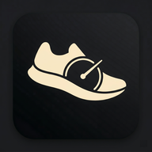
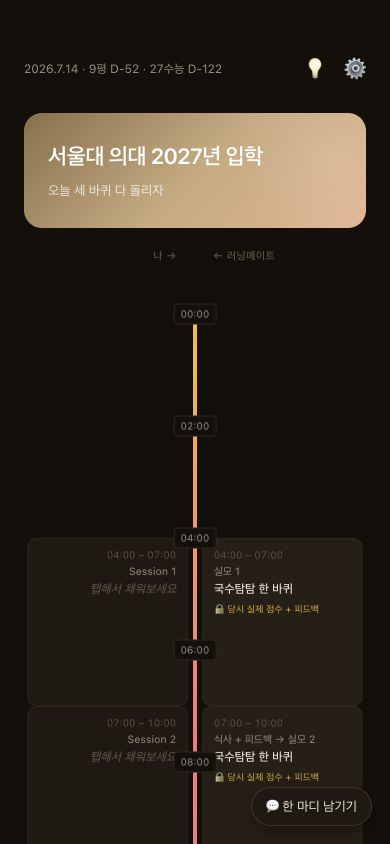

하루 전체 타임라인
수험생의 실행과 러닝메이트의 피드백을 같은 시간축에 나란히 놓습니다.

러닝메이트ALL DAY, ON YOUR PACE
계획만 남기고 사라지지 않아요.
아침부터 밤까지 같은 하루를 보며 한 구간씩 달립니다.
SEOUL NATIONAL UNIVERSITY MENTORS서울대 선배 Cathy & Ray의 밀착 마크
iPhone Safari 홈 화면에 추가 Android PWA 바로 설치

ACTUAL DEVELOP BUILD
계획 집중 인증 회고 다음 시행
THE WHOLE STUDY LOOP
하루를 보는 순간부터 공부가 끝난 뒤까지, 실제로 구현된 기능을 한 흐름에 담았습니다.
ACTUAL APP SCREEN하루 타임라인
수험생의 실행과 러닝메이트의 피드백을 같은 시간축에 나란히 놓습니다.
시작·종료 시간, 남은 시간, 세션별 할 일을 한 화면에서 관리합니다.
세션이 끝나기 전에 실제 공부 흔적을 촬영하고 비공개 저장소에 보관합니다.
실모 점수, 만족도, 잘한 점과 개선점을 기억이 선명할 때 바로 남깁니다.
사진과 회고에서 오류 유형·가능한 원인·다음 행동을 구조화합니다. 기본 제공량은 무료입니다.
Cathy & Ray의 공동 답장함으로 질문이 이어지고, 앱 안에서 개별 답장을 받습니다.
PRIVATE · MENTOR 2
회고를 남긴 바로 그 앱에서 서울대 선배 Cathy & Ray에게 묻습니다. 학생 1명과 담당 멘토 2명만 보는 비공개 채널입니다.
무엇을 물어볼까요?
제한 베타 · 오른쪽 대화는 실제 기능을 바탕으로 만든 응답 흐름 예시입니다.
PRIVATE · MENTOR 2Cathy & Ray
1Cathy · Ray와 나만 보는 대화예요.
ACTUAL FEATURE STRUCTURE · RESPONSE EXAMPLE